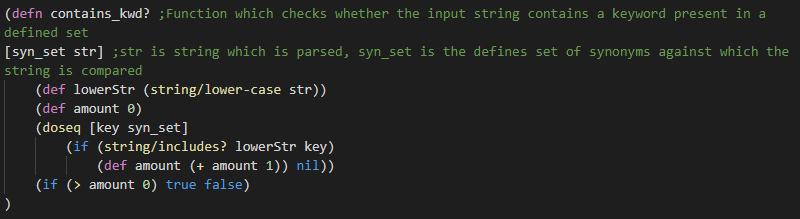
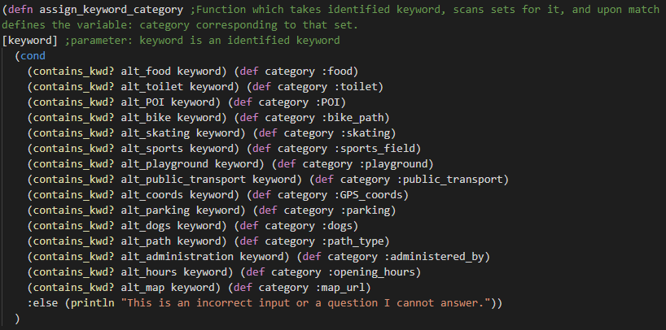
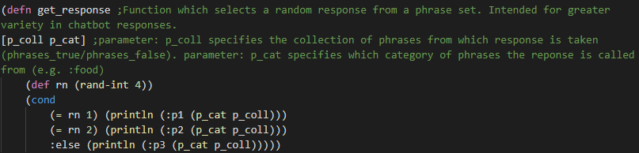

This page serves as a technical report for the Clojure Chatbot developed by Daniel De Corte, Artem Pyatigorov, Nikita Druzhkov and Vladyslav Koskovetskyi as part of a in class assignment for the Symbolic Computation module instructed by Petr Švarný at Prague college in the 2004 semester. The document aims to illustrate the process behind the creation of this application, the decisions taken and the justifications for them.
The development process was split into multiple stages. Considering the small scale of the project and the relatively novice level of the team members, no specific SDLC was chosen or applied in the development process in this project.
During the first stage, the main goal was the collection, sanitization and storage of data in a strucutred manner which allows interpretation by clojure. For ICA1, the decision was made to simplify this aspect as much as possible while maintaining functionality. The data about each individual park was stored in variables named respectively after them. Below is an example, showing the structure in which data was stored for the park Vyšehrad:
Besides the structuralization of data, this stage also involved the writing of phrases which the bot is going to respond to the user with based on context.
In the second stage, the primary focus of the team was to create component functions which could later be used in the main body of the program to perform a variety of operations. Some of these are:
FIGURE 2: Function which identifies keyword:
FIGURE 3: Function which detects category of keyword in user string:
FIGURE 4: Function which randomly selects a response based on category:
Stage 3 was primarily about creating the structure of the main function. This involved writing a loop which processes user inputs, stores them in a variable, reads them and repeats this process as long as the input is not a specific word which ends the loop.
Flowchart illustrating the functionality of the chatbot:
The fourth and final stage was by far the most extensive and time-demanding. During this stage, helper functions were integrated into the main body of the chatbot, tested and modified to ensure compatibility with one another within the program.
During this stage, many improvements and optimizations were made by various members of the team. Often there was an initial, functioning but inefficient function which was improved upon and adapted to fit our needs more exactly and be easier to use.
Once finalized, the code was cleaned to not include any outdated and unused helper functions or data, restructured to abide by clojure coding style and also commented to explain the functionality of each function and the requirements for their parameters/ arguments. At last, the lifespan of the project was documented in this technical report and the README.
Seeing as the current build of the chatbot is only the first of at least two, the team has also gone through discussion with regards to improvements to current features and the addition of new ones in the future.
One of the main goals outlined for future improvements is the overall redesign of what the end user is presented with when using the chatbot. This includes the possible creation of a GUI, the color-coding of text - making it clear which message comes from the bot and which is from the user and also the addition of nicknames in front of messages, serving the same purpose.
Another planned enhancement is full czech alphabet support. The current bot is not able to interpet special czech letters such as: ž, č or ř. While this was initially intended to be implemented, the way of doing it was inefficient and would greatly increase the size of the code. The initial plan was to use a concept similar to the one in keyword_recognition, i.e. matching user input against park name alternatives stored in sets. This will be a main area of focus for the next iteration, as since the bot is supposed to work with Czech parks, it is a srucial aspect.
The current build of the bot is incapable of switching between parks mid conversation. It requires a restart of the program, decreasing user convenience. This is an oversight which is definitely going to be adressed in the next build.
The current bot functions well when the user behaves predictably, but runs into issues when the user makes major spelling mistakes, ignores the command of the bot to enter a park name, enters a park name with czech alphabet letter or types gibberish. This is another major aspect that will be improved in the next iteration of the program.
GitHub was selected as the tool for project management, collabotation and hosting early on in the lifecycle of the project. The primary reason for this is the rich selection of features GitHub provides for effective and intuitive project management & collaboration.
Discord was selected as the primary tool for instant communication and discussion about the project due to its numerous features allowing for easy filesharing, screensharing, etc.
The above Github project board was used to keep track of tasks, discuss encountered problems and approaches to them. As seen in the figure, the project board was split into 5 Columns.
The first column serves as a place where contributors can post their suggestions which will be considered for future integration into the project.
The second column is meant for tasks/ problems which the team has committed to solving and implementing. The individual issues sit in this column until a developer assigns them to himself and officially begins work on them.
The third column indicates what issues/ problems are currently being worked on by which developer. The primary purpose it served was the avoidance of unfortunate situations in which 2 developers work on the same issue by mistake, whereby misallocating their time.
The fourth column is for tasks which have been completed and are currently waiting for or under review by another developer. Reviews were done mainly on data and on code and helped spot some inconsistencies, missing data or spelling mistakes.
The final column displays issues which have already been resolved and reviewed. Issues found in this column have already been integrated into the latest version of the product.